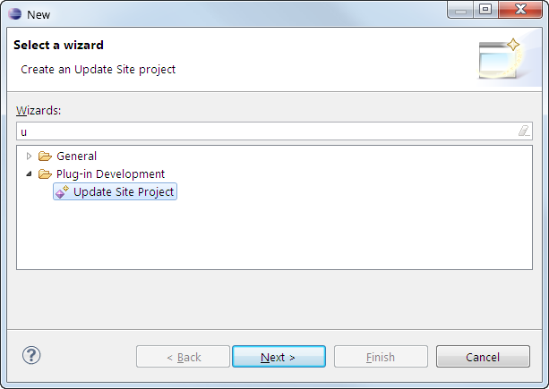
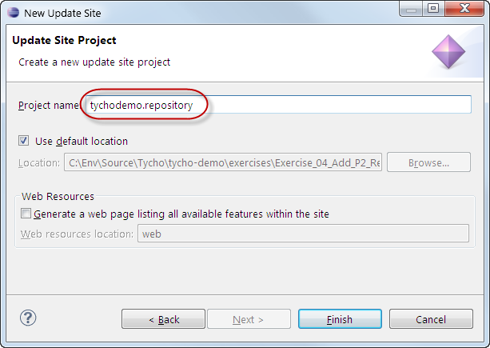
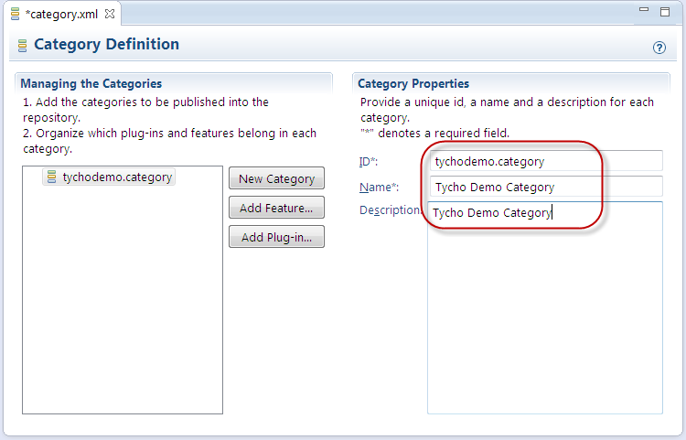
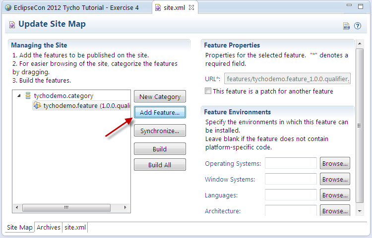
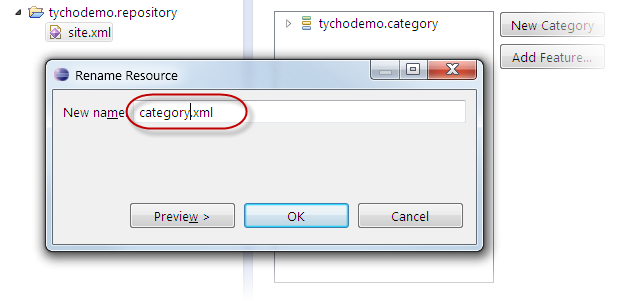
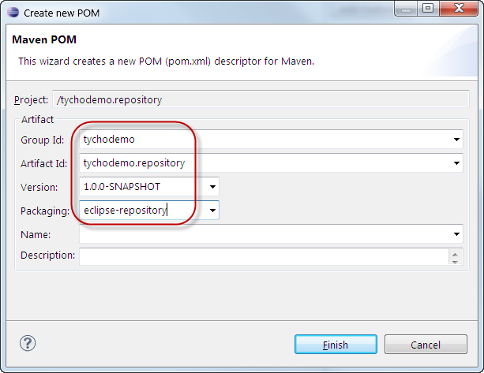
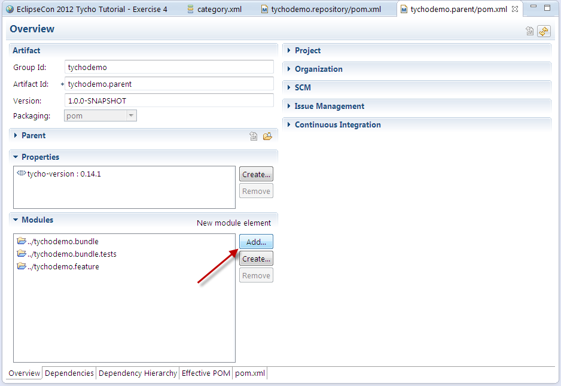
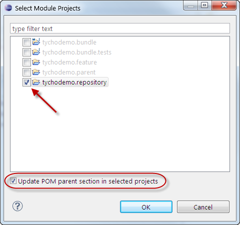
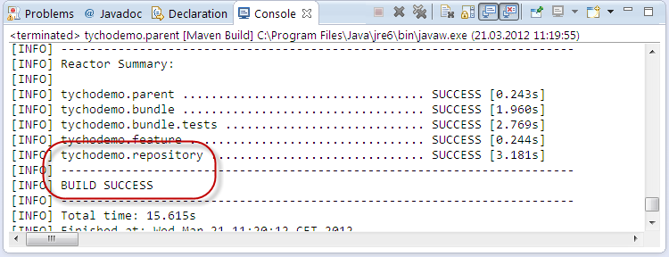
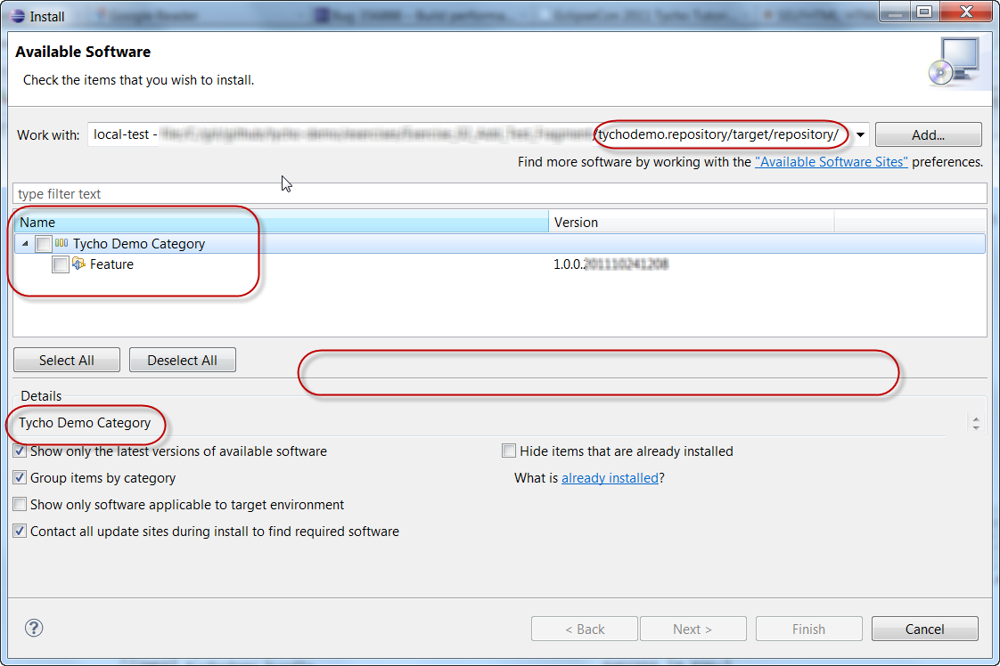

<Previous Exercise
| TOC
| Next Exercise>
Exercise 4: Add a p2 repository
In this exercise, we publish the feature and bundle we built in the previous exercises into a p2 repository.
A p2 repository is the format in which we publish installations/updates of our RCP application.
Recovery option
This section is optional and only needed if you want to catch up from exercise 3 or reset your workspace.
Creating a p2 repository
- Create a new update site project tychodemo.repository
File > New > Other > Plug-in Development > Update Site Project


- In site.xml, create a new category tychodemo.category and add the feature tychodemo.feature to it:


- Rename site.xml to category.xml using Right-click Refactor > Rename...

- Include the new project in the build:
- Right-click on tychodemo.repository > Configure > Convert to Maven Project
- Enter the group ID tychodemo, version 1.0.0-SNAPSHOT and packaging eclipse-repository. Background info: the packaging type eclipse-repository tells Tycho to build a p2 repository.

- Open the pom.xml of tychodemo.parent and click on Add... in the Modules section

- Select the tychodemo.bundle module, select Update POM parent section in selected projects, and hit OK

- Run the build of tychodemo.parent, e.g. by selecting tychodemo.parent from the run history
Expected results:

- Test the p2 repository just created:
- Help > Install New Software > Add... > Local...
- Choose your local tychodemo.repository/target/repository/ folder.
- Now the demo category and feature created in the previous step should show up in the p2 installer UI. Press Cancel as we only want to check if the p2 repository is valid and
don't want to install.

<Previous Exercise
| TOC
| Next Exercise>